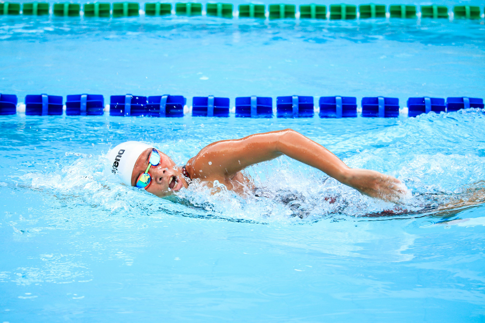

Swimming is one of my favourite types of activities because it keeps me fit and at the same time lets my mind rest while I'm doing it. It's also one of the best full-body workouts for your health.

Shrek is by far one of my favourite movies and I love it for a reason.
A few things I'm obsessed with about these movies:
Since I was kid and even till this day, Lego has been my hobby. No matter what Lego it is, the process of building a Lego feels really nice and relaxing for me.